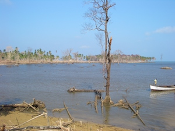

- Title Page
- Introduction
- The Islands and the Anthropologist
- Tsunami and First Response
- Wading In
- Second Tsunami
- In Search of Axes
- Steering a Sustainable Course
- Steering Committee
- Exchange Visit
- Nirnay Means Decision
- Up and Running
- Caritas Leans In
- Singh Sounds a Warning
- Midcourse Correction
- The SOPHIA Experiment
- Taking Stock
- SOPHIA Reports
Steering a Sustainable Course
On April 28, 2005, the same day the shipment of axes arrived in the Nicobars, Fischer-Kowalski sat down in Vienna with representatives of Caritas and Universal Music to firm up plans for their joint undertaking. Singh’s trip to Thailand and his account of the “second tsunami” had done a lot to focus their thinking, and the group quickly came to terms. The three parties—the Institute of Social Ecology, Caritas Austria, and Universal Music—would form a partnership, led by a Steering Committee of five members, whose mission would be to support an “integrated reconstruction” program in the Andaman and Nicobar islands. [24] A formal agreement was signed a month later, on May 25, at which time the enterprise was finally given a name: the Sustainable Indigenous Futures fund (SIF). [25]
The agreement specified that the purpose of the fund was to support the “rehabilitation of the indigenous peoples” of the islands by promoting their self-determination and lending scientific guidance and financial support to development projects judged to be ecologically sustainable, socially just, economically viable, and culturally appropriate. “We chose a social and ecological balance as our starting point,” says Fischer-Kowalski.
We asked, how can these peoples lead a meaningful existence in the environment they’ve inhabited for centuries? And how can we use the resources of this fund in such a way that we wouldn’t force a Western way on them? Instead we tried to find a gentle way that would enable them to survive in the globalized world, and have a good life. [26]
According to the agreement, the €400,000 in contributed funds would be managed by Caritas on behalf of all parties (including the fundraiser Neighbor in Need (NIN), which was the legal custodian of the CD proceeds); in particular, Caritas would approve all remittances. The institute would provide access to the islands through Singh, along with cultural understanding and scientific support.

© Simron Singh
Tsunami damage
Fischer-Kowalski was scrupulous about keeping the institute’s humanitarian work and its scientific research on independent but mutually supporting tracks. The institute’s application to the Austrian Science Fund for research funding was completely separate from SIF. Although Singh would work on both projects, he would not serve on the SIF Steering Committee, and would have nothing to do with money decisions. The scientific project, called Research on Coping with Vulnerability to Environmental Risk (RECOVER), was designed to be directly useful to the Nicobarese; for example, it would collect data about ecological transitions, track changes in social metabolism, and develop computer models to help the islanders decide among development options. In this way science, self-determination and sustainable development would go forward hand in hand.
It was an innovative approach to reconstruction, and it had both admirers and skeptics. “What [SIF] is doing that’s so special is a combination of refusing a patronizing ‘isolationist’ option while encouraging the Nicobarese to become their own advocates,” said Brian Durrans, deputy curator of the British Museum’s Asia Department in 2006. “It’s a pretty inspiring approach in conditions of sudden catastrophe.” [27] But Celeste Angus, director of international cooperation for World ORT, which had conducted teacher training for non-tribal peoples in the islands, was more cautious. “I should think it would be a very big challenge for an academic group to try to do NGO work, and not just because of possible conflicts of interest,” she says. “What policies and procedures would you adopt? Who would manage the projects? But I can see how groups with special expertise might see a special need, especially in such an isolated area, and they certainly bring a unique perspective.” [28]
[24] Elisabeth Cerny, “Besprechungsprotokoll,” April 28, 2005, in SIF files.
[25] “Vereinbarung zwischen dem Institut f ü r Soziale Ökologie (IFF, Universitat Klagenfurt), Universal Musik und Caritas Austria,” May 25, 2005, in SIF files.
[26] Barth, Aftermath .
[27] In Richard Stone, “After the Tsunami: A Scientist’s Dilemma,” Science , Vol. 313, July 7, 2006, p. 35.
[28] Author’s telephone interview with Celeste Angus on February 19, 2014.